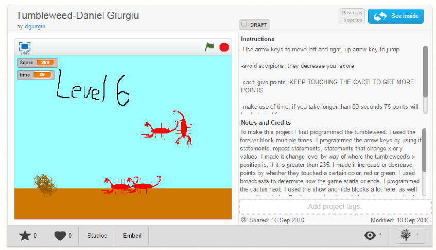

Name Assignment

Description:
Use scratch to make an animation showing your name, give the letters 3 unique related. The program needs to run when the green flag is clicked. For extra credit, all the letters went back into place after the green flag is clicked.
Concepts Learned:
- Blocks: commands that trigger actions in scratch
- Conditional statements - used if statements to……
- Events: When green flag is clicked, when a certain key is pressed, etc.
- Loops: I used forever blocks to create continuous actions
- Conditional Statements: I used if statements to start actions that need another action to start it.
Computer Buying Project

Description:
For the computer buying project, we had to create a presentation to convince someone what computer to buy. We created four options based on the person’s needs. We covered topics such as memory, RAM, hard drives, and price.
Concepts Learned
- Presentations in scratch: we learned how to present information using scratch pages as powerpoint slides
- Changing backgrounds: we had to change the backgrounds a lot for this presentation.
- Text on scratch: We had to use text and manipulate it to fit the project demands. We changed the color, style and size of the text.
Final Project

Description:
We had a choice to either do a game or a story for the final project. I chose to do a game. The game had to have levels, keep score, change time, and change stage. I incorporated all of these aspects and I created the sprites myself.
Concepts Learned
- Sensing: I learned how to add sensing blocks and incorporate them in my code, usually with if statements.
- Broadcasts: I learned how to use broadcasts by sending and receiving them, which prompted other actions to begin.
- Used loops - I used a forever block to……, I used a repeat until block to…….
- Variables: I had dealt with variables before, but in this project they were especially important. I used them to set the score and time.
- Looks: I used looks to hide and show the elements of the game at specific points.